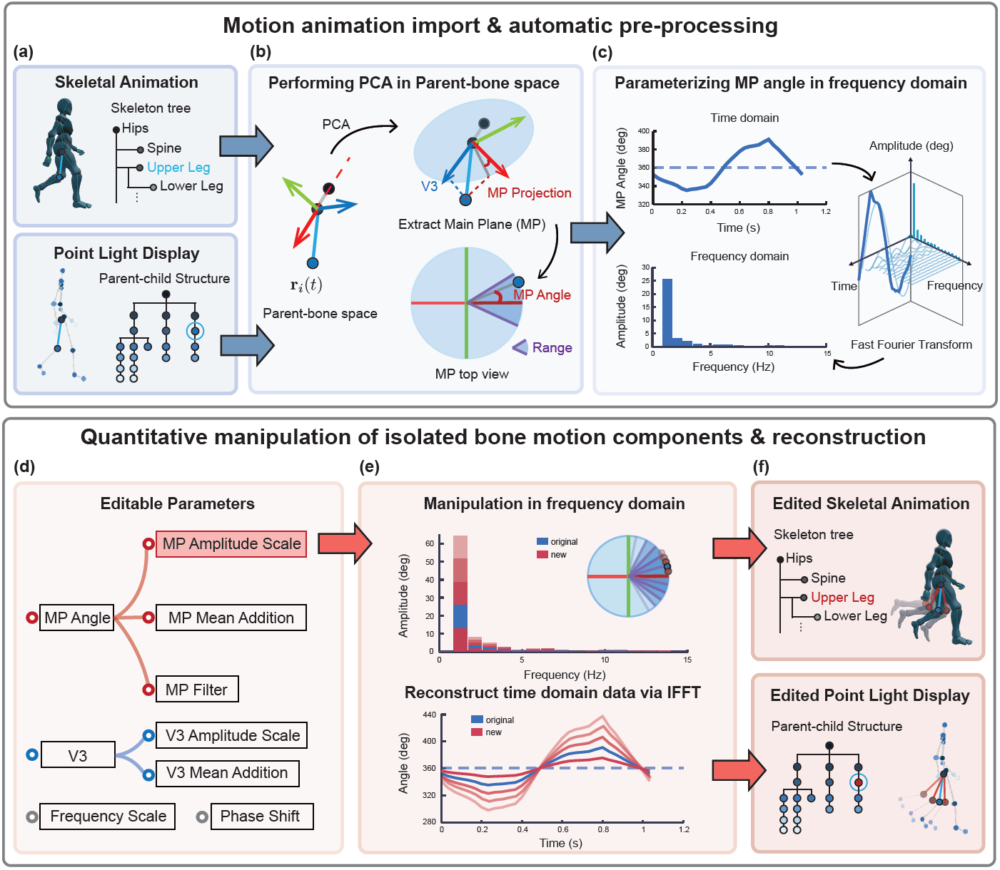

MoRemix: An online toolbox for parameterized body motion manipulation
Introduction
MoRemix is an online toolbox for importing, manipulating, and exporting naturally recorded human body motion. Users can import skeletal animations in GLB, GLTF, or FBX format, or point light display (PLD) data in CSV or TXT format, which MoRemix automatically converts into a common bone-level representation. Motion can then be edited for individual bones or bone groups by adjusting movement amplitude, average posture, frequency ranges, and phase. Results can be exported as animated GLB files, PLD CSV data, or customizable WEBM videos, with batch processing available for multiple parameter and camera settings.
Parameterized manipulation of bone motion continua
MP Amplitude Scale = 0.1
MP Amplitude Scale = 0.5
Source Animation
MP Amplitude Scale = 2.0
Walking (Bone Unit: Upper Arm): Adjust amplitude to control arm swing intensity
V3 Mean Addition = -0.2
Source Animation
V3 Mean Addition = 0.2
V3 Mean Addition = 0.4
Walking (Bone Unit: Upper Arm): Change mean value to manipulate postural arm openness
MP Amplitude Scale = 0.2
MP Amplitude Scale = 0.4
MP Amplitude Scale = 0.6
MP Amplitude Scale = 0.8
Source Animation
Stretching (Bone Unit: Shoulder & Upper Arm): Change amplitude while keeping start point fixed
MP Amplitude Scale = 0.1
MP Amplitude Scale = 0.5
Source Animation
MP Amplitude Scale = 1.5
MP Amplitude Scale = 2
Bowing (Bone Unit: Spine): Change amplitude while keeping start point & end point fixed
Frequency = 0.4 Hz
Frequency = 1 Hz
Source Animation
Frequency = 3 Hz
Frequency = 4 Hz
Waving (Bone Unit: Right Lower Arm): More/less waving periods in the same duration
Easy-to-use parameter input interface
Generalizable support for multi-format motion inputs
Method
